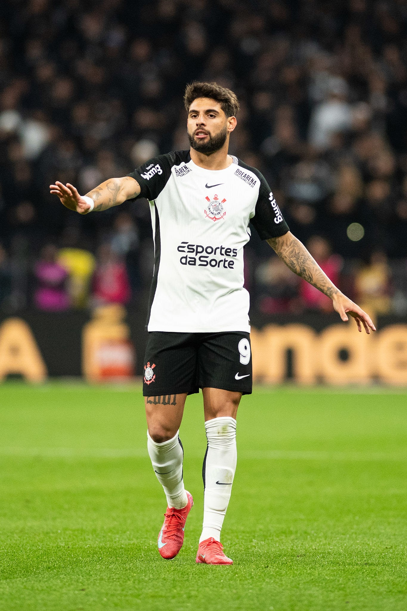

Três semanas após cirurgia, Yuri Alberto volta a treinar no Corinthians
O centroavante Yuri Alberto voltou a treinar normalmente com o elenco do Corinthians nesta quarta-feira, somente 21 dias após passar por uma cirurgia de hérnia inguinal. A previsão inicial era de que o retorno poderia demorar de dois a três meses.

Ele concluiu a transição física iniciada na última sexta-feira e passou a ficar à disposição do técnico Dorival Júnior para a partida de volta das quartas de final da Copa do Brasil, contra o Athletico-PR, no próximo dia 10.

O lateral-direito Matheuzinho também trabalhou sem limitações no treino desta quarta-feira, no CT Dr. Joaquim Grava, depois de dois dias de folga. Ele ficou fora do clássico contra o Palmeiras, pela 22ª rodada do Campeonato Brasileiro, no último domingo, devido a uma sobrecarga no músculo posterior da coxa direita.